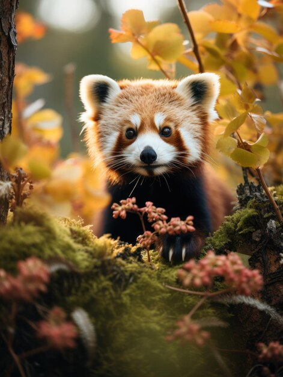
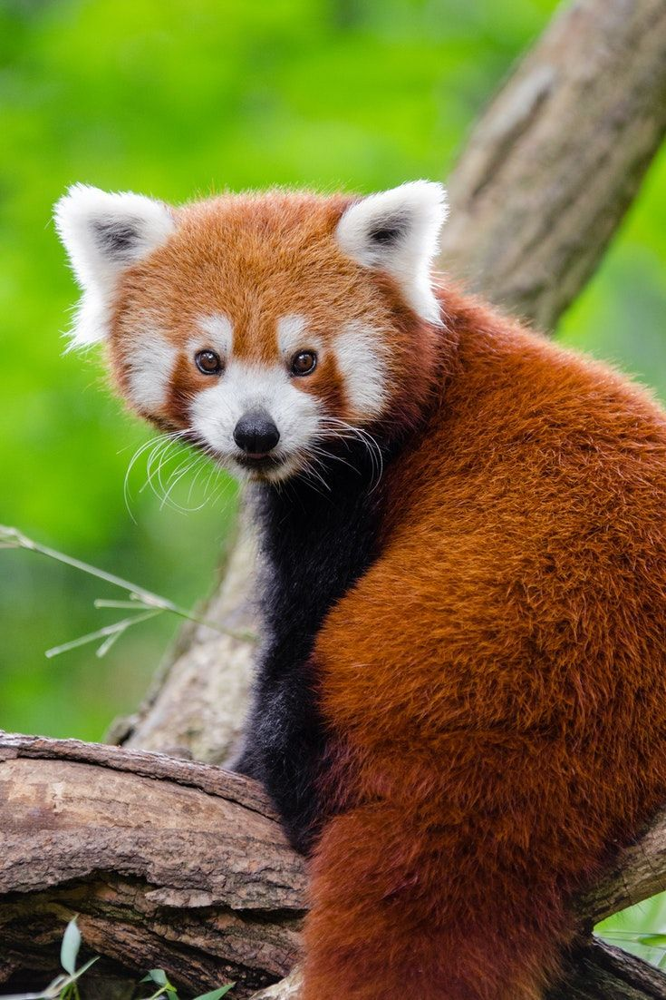
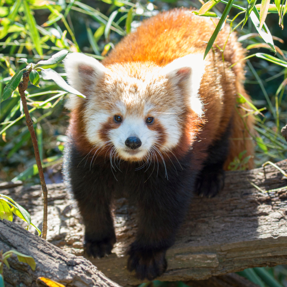

Camuflagem:
A coloração do panda-vermelho é uma importante forma de defesa contra os predadores. Os tons de seus pelos facilmente se misturam com a folhagem local,
a qual se destaca pelas cores amarela, laranja e vermelha, além da presença do líquen branco e do musgo vermelho. A região ventral na cor preta faz com
que esses animais não sejam vistos facilmente de baixo para cima.
Falso Polegar:
Uma característica interessante desses animais é a presença de um falso polegar, formado por uma extensão do osso sesamoide. Esse falso polegar é extremamente
importante para o animal, pois ele o utiliza para arrancar folhas de bambu e também para se agarrar às árvores
Expectativa de vida:
O panda-vermelho vive uma média de oito a dez anos. Considera-se que a espécie chega a alcançar no máximo 14 anos de vida.
Parentesco com os Ursos:
Apesar de sua semelhança física com os pandas gigantes, os pandas vermelhos não são parentes próximos dos ursos.
Na verdade, eles estão mais intimamente relacionados com os guaxinins e mustelídeos do que com os ursos.
Habilidades de Escalada:
Os pandas vermelhos são excelentes escaladores e passam a maior parte de seu tempo nas árvores.
Marcas Faciais:
Assim como os pandas gigantes, os pandas vermelhos têm marcas distintas ao redor dos olhos, semelhantes a "lágrimas".
Essas marcas escuras contrastam com a pelagem vermelha e ajudam a proteger seus olhos do brilho do sol.
Adaptações para Manipulação:
Os pandas vermelhos têm uma adaptação especial em seus pulsos que lhes permite manipular objetos de forma semelhante
às mãos humanas. Isso os ajuda a agarrar folhas, ramos e outras partes de sua dieta.
Padrão de Sono Único:
Enquanto a maioria dos mamíferos tem padrões de sono distintos entre o dia e a noite, os pandas vermelhos têm uma
abordagem mais flexível. Eles podem ser ativos tanto durante o dia quanto durante a noite, adaptando-se às condições
locais e ao ambiente.
|



.jpg)
|